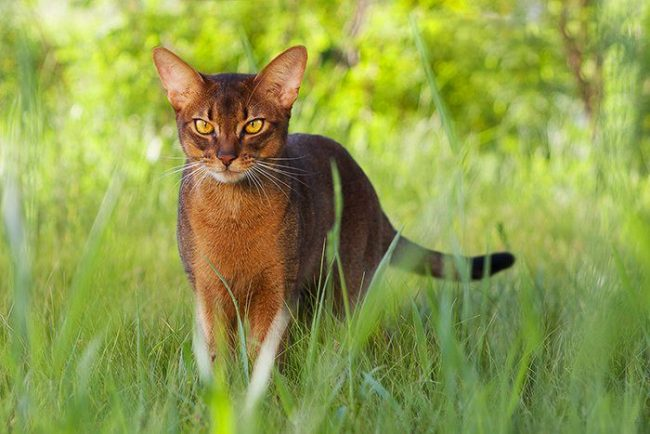

Уход за
Абиссинской
кошкой
Для ухода за шерстью абиссинкой кошки требует минимальных усилий.
Вполне достаточно периодически, не чаще чем раз в неделю, вычесывать шерсть при промощи металлической расчески
с частыми зубьями. Воду многие абиссинки любят, поэтому мыть их не сложно.
 Перед ванной желательно подстричь
кошке когти. Мыть кошку, держа ее за лапы, следует теплой водой, в тазу или раковине, а не под душем, несколько
раз меняя воду. После намыливания специальным кошачьим шампунем без кондиционера необходимо тщательно смыть пену,
прополоскав кошку не менее трех раз в чистой воде. Мытье можно рекомендовать как способ ускоренного удаленния
старой шерсти в период линьки. Все кошки любят точить когти.
 Чтобы избежать проблем с порчей мебели,
желательно приобрести в зоомагазине специальную "когтедралку". Кроме того, раз в две недели можно осторожно
острые кончики когтей специальным секатором. Абиссинки легко приучаются к пользованию кошачьим туалетом.
Они очень чистоплотны и требовательны к поддержанию порядка в их туалете.
Чтобы избежать проблем с порчей мебели,
желательно приобрести в зоомагазине специальную "когтедралку". Кроме того, раз в две недели можно осторожно
острые кончики когтей специальным секатором. Абиссинки легко приучаются к пользованию кошачьим туалетом.
Они очень чистоплотны и требовательны к поддержанию порядка в их туалете.


КОШКИН ДОМ